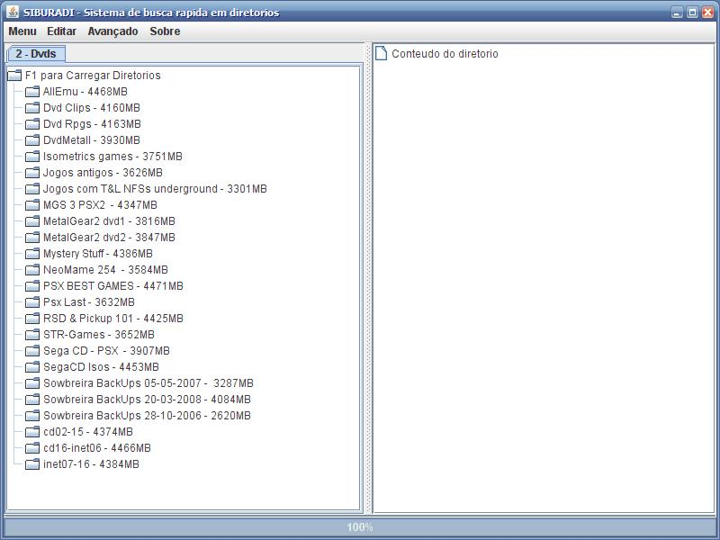
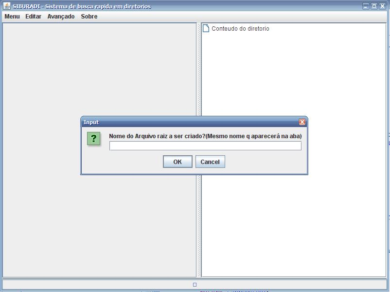
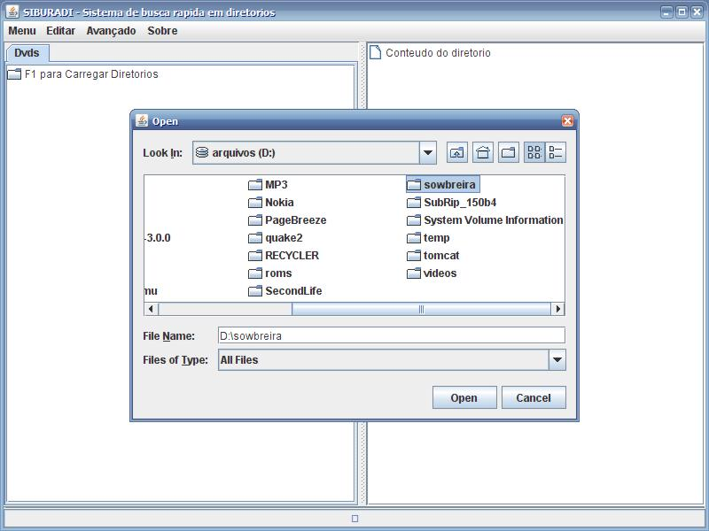
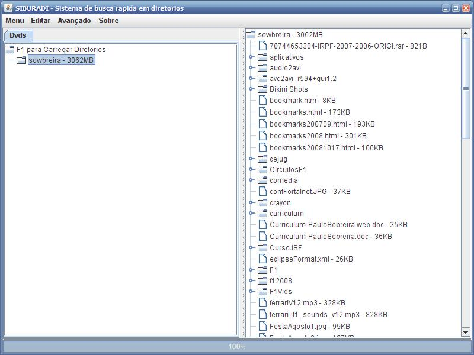
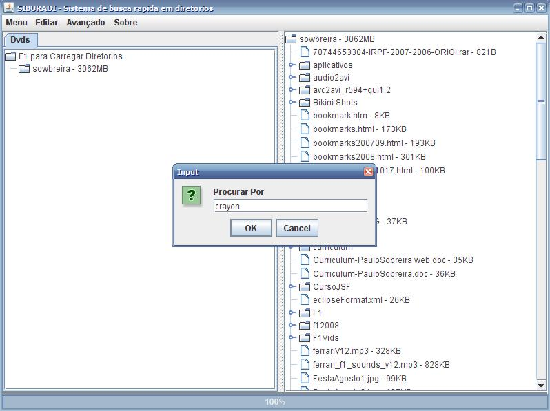
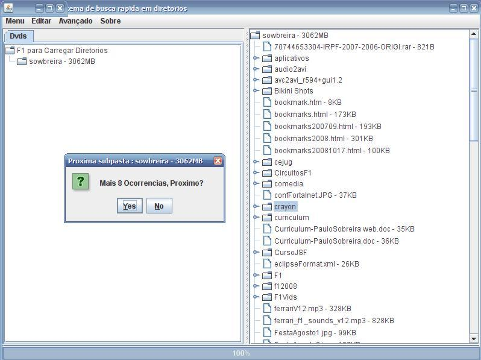
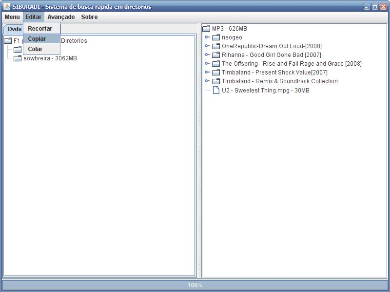
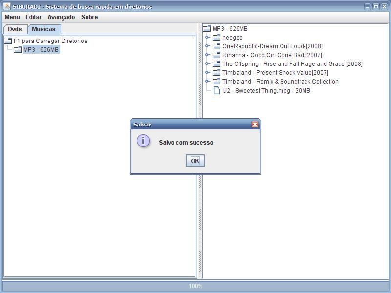

Sistema de busca rápida em diretórios

SIBURADI é um simples programa para visualizar a localização de arquivos em qualquer tipo de dispositivo.

No menu avançado escolha criar "Nova Aba" para criar um grupo novo de arquivos. As informações serão salvas no diretório data com o nome digitado.

Na pasta raiz do grupo pode ser acionado um diretório ou raiz de disco para catalogar.

Após o catálogo ser criado, o conteúdo do mesmo aparece na janela da direita.

Nos diretórios de catálogos busca podem ser realizadas (F3 ou Menu->Procurar) a busca é feita buscando parte do nome nos diretórios percorrendo toda árvore.

Caso existam mais ocorrências estas são enfileiradas.

É possível também copiar e colar pastas através dos catálogos.

Após qualquer alteração no grupo de catálogos, este deve ser salvo (F4 ou Menu->salvar) ou então salvar tudo com (F6).

 This
Web Page Created with PageBreeze Free
Website Builder
This
Web Page Created with PageBreeze Free
Website Builder